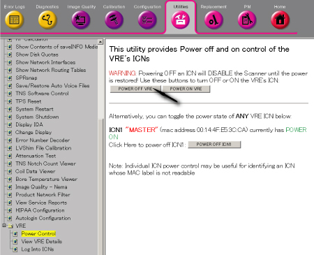
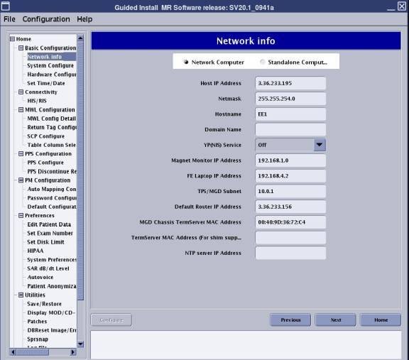
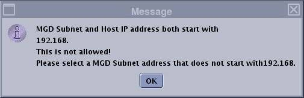
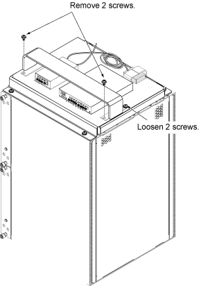
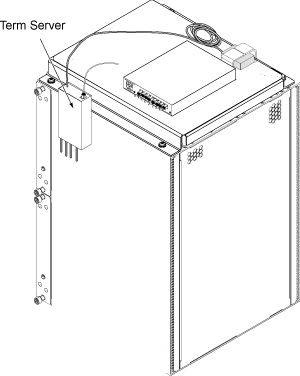
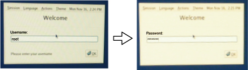
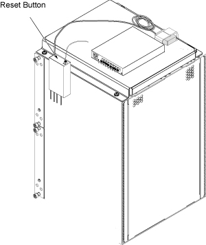
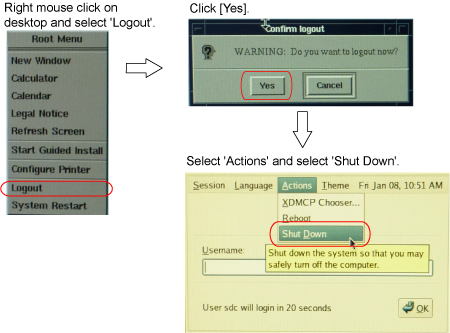
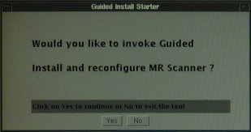
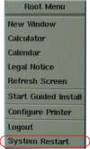

CAM IP change procedure
Prerequisites
Overview
This procedure shows how to change the TPS/MGD Subnet (CAM IP) when the host IP on site is conflict with the system IP address or the host IP will change and the new one is conflict with the system IP. In our system there are only two IP address available, which are 10.0.1; 192.168.*.*.
Procedure
- Turn the VRE power OFF from Common Service Desktop. (Utility/VRE/Power
Control)
Figure 1. VRE Power OFF

- From the Common Service Desktop select [Configuration] . Under
Guided Install, select [FE mode] . The window called Install Tool
opens. In the window called “Install Tool”, type 'operator
<Enter>' at the password prompt. The Install menu will then open.
Go to the [Network Info] tab. And then change the TPS/MGD Subnet to
10.217.*; or 10.121.*; or 192.168.*; or 10.47.*; or 10.0.* according
to actual host IP address. See Figure 2 GI. If the host IP is same with the TPS/MGD Subnet the one error
message will pop up. See Figure 3
Figure 2. GI

- After setting the configuration click the Configure button at
the left bottom and then Exit the Install GUI once completed and reboot
the system to active the new setting. If the host IP is same with
the TPS/MGD Subnet the one error message will pop up. See Figure 3.
Figure 3. error message

- Shutdown the system fully by main breaker of Cabinet and perform LOTO. Refer to Lockout / Tagout for System Cabinet PDU Main Breaker.
- Remove L Upper Front Cover and R Upper Front Cover of System Cabinet. Refer to SC Cover Removal.
- Disconnect the following connectors from front panel of CAM
Lite 2 and HUB.
-
Ethernet swith (HUB): port 6, port 7, port 8
-
UPM1, 2: J3
-
NB DET1, 2: J1, J4
-
NB AIF: J3, J5
-
IRF3: J8, J11, J13
-
- Loosen 4 screws which are tightening CAM Lite 2 bracket and chassis.
- Withdraw CAM Lite Assy until it stops at stopper position.note:
When drawing out the unit, be careful not to damage cables and unit.
Figure 4. Withdraw CAM Lite Assy

- Remove 2 screws from front side of support bracket, and loosen
2 screws fixing rear side of support bracket, and remove support bracket
and HUB.
Figure 5. Bracket Removal

- Temporary locate the Term Server as illustration.
Figure 6. Temporary locate the Term Server

- Temporary restore the CAM Lite position.
- Connect All Cables.
- Turn the System Power ON and login as root. Refer to Lockout / Tagout for System Cabinet PDU Main Breaker.note:
To log in to the system as root, enter 'root' for user name and enter 'operator' for password.

note:By the following term server reset procedure, IP Address of term server can be assigned.
- After system is up, reset the Term Server according to the following
steps.
- Remove power connector from the term server.
- Press and hold the small square button, labeled 'reset' next to power jack.
- Connect power to termserver, while continuing to hold in reset
button.
Figure 7. Term Server Reset Button

- Continue to hold reset button until the POWER LED blinks on
and off in a 1:5:1 sequence. If you interrupted the continuous hold
momentarily, by slip/mistake, the 1:5:1 will not appear. If this is
the case repeat till LED blink sequence is as noted. Once this LED
is on continuosly, it has received its IP from host. NOTE: now use
the browser interface described above to set port mode to RealPort.
The need for this activity is required each time to initiate the rarp requests. Our default configuration will be RealPort
Ethernet UP LED (green) Ethernet activity LED (yellow)
RESET button
Power LED (green)
When all is configured and operating correctly, the power and Ethernet UP LED should be continuously on, and the Ethernet activity LED will periodically flicker.
- Shut down the system from root according to Figure 8.
Figure 8. Shut down the system from root

- Turn the System Power off by Main Breaker of Cabinet. Refer to Lockout / Tagout for System Cabinet PDU Main Breaker.
- Restore Term Server and Install Bracket. Then, restore CAM Lite and System Cabinet for normal operation.
- Turn the system power on and login as root.note:
To log in to the system as root, enter 'root' for user name and enter 'operator' for password.
- Click [Yes] for the following screen to invoke Guided Install.
Figure 9.

- Select VRE Configuration TAB and Click on [Configure VRE Blades].note:
This procedure will take between 15-20 minutes.
Figure 10. VRE Configuration Screen

- Reboot the system from root by right mouse click on desktop
and selecting 'System Restart'.
Figure 11. System Restart from root

- Verify that the system boot up normally.
1 Finalization
Procedure
- Perform one test phantom scan and confirm that it operates normally.
- To check the IP address assigned by the system, open c-shell and enter the following command
cd /etcEnter
more hostsEnter
You can check the IP address assigned by the system.